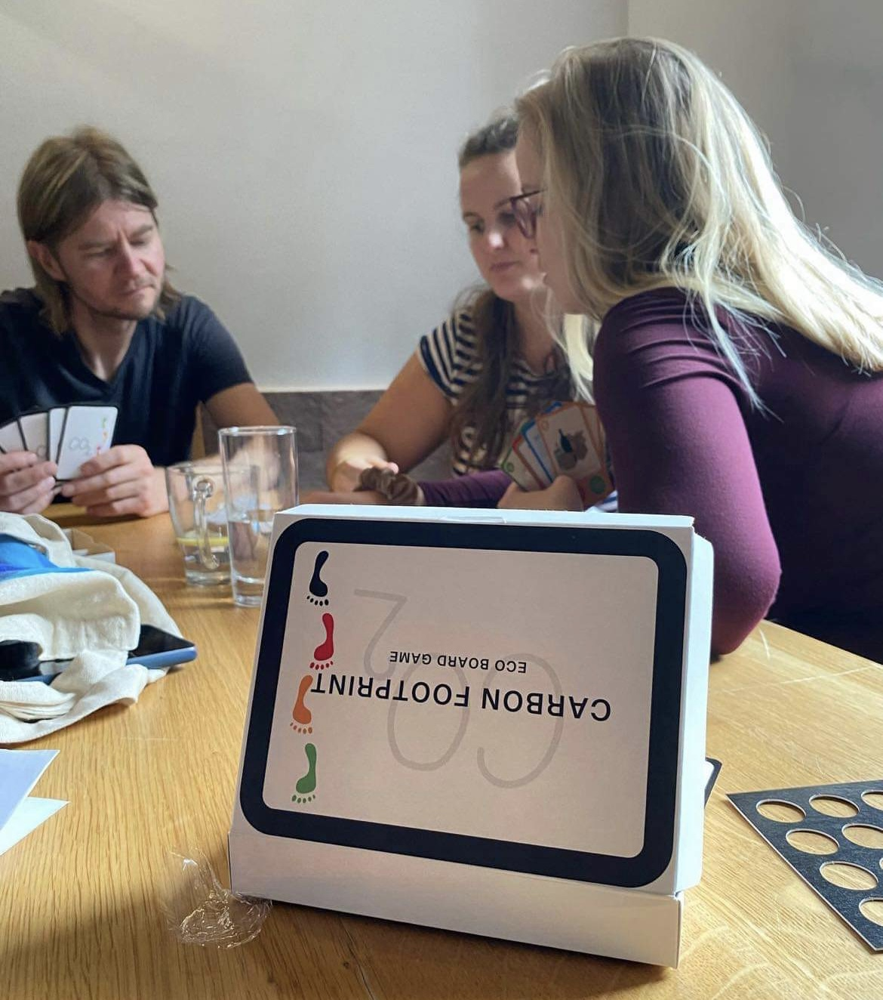
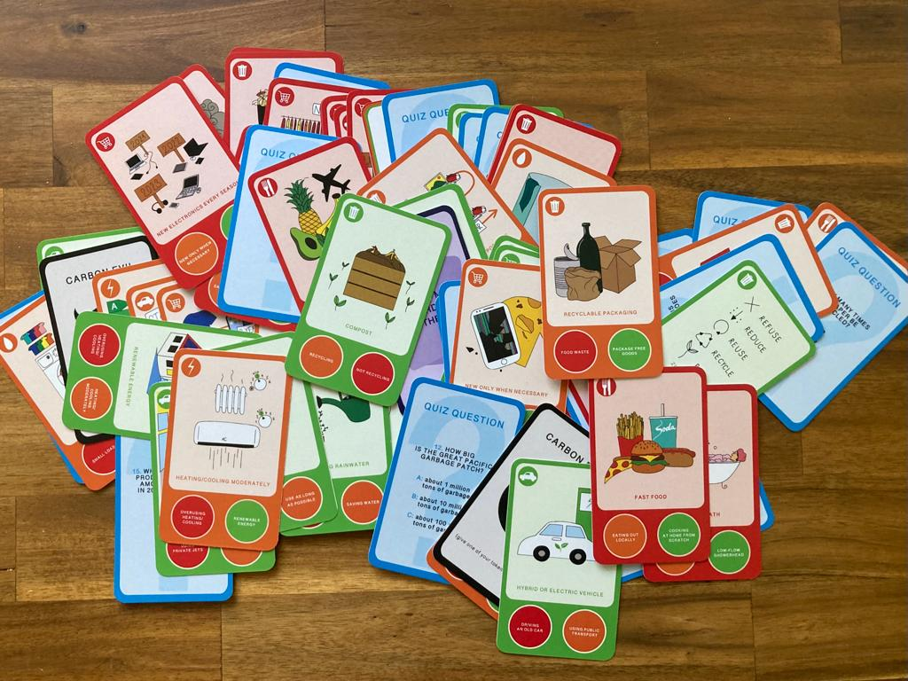
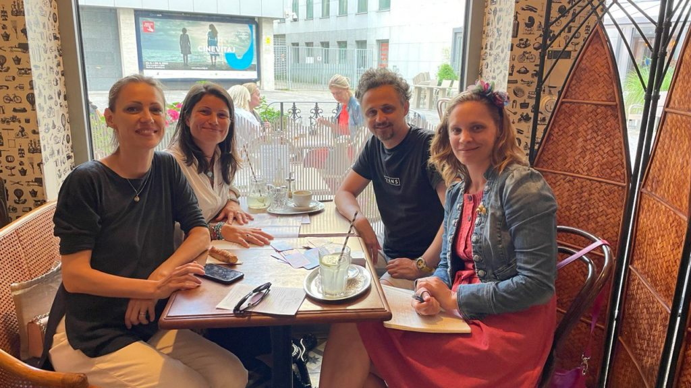

Reduce Your CO₂ — Help Planet!
A four-day training that turned carbon literacy into a game youth workers could take home and play with young people.

About the project
How do you make a number as abstract as a carbon footprint feel real to a teenager? You turn it into a game. Reduce Your CO₂ — Help Planet! was a training activity for youth workers and youth leaders, built around exactly that idea.
Over four days at Ekorezort Vendelín, an eco-resort in north-west Slovakia, fifteen youth workers and leaders learned to run the “CO₂ footprint game” in their own green-education programmes — building practical skills in sustainability and green-competence education. In keeping with the project's low-footprint philosophy, all meals during the training were vegetarian.
Highlights
- A four-day training (two full and two half days) for 15 youth workers and leaders
- Hands-on practice with the CO₂ footprint game
- A focus on sustainability and green-competence education
- Fully vegetarian catering, in line with the project's philosophy
The CO₂ Footprint Eco-Board Game
At the heart of the training is the CO₂ Footprint Eco-Board Game — a hands-on learning game that turns everyday choices into conversations about carbon footprints. Players compare options across food, travel, energy, shopping and waste, using a simple traffic-light system to see their climate impact. Created for young people, teachers and educators, it builds carbon literacy, critical thinking and collaborative decision-making through play.

Gallery
